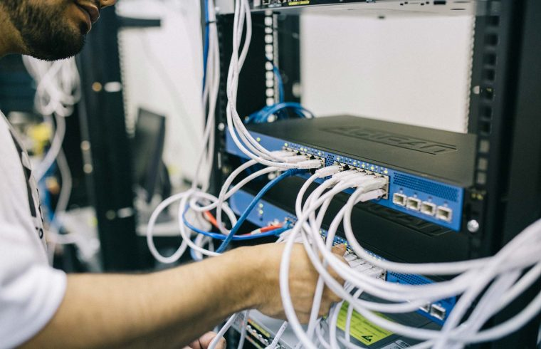

Sekilas Pandang Jurusan TKJ SMKN 1 Kepanjen

.png)
.png)
Profil : Keahlian Teknik Komputer dan Jaringan (TKJ) mempelajari tentang hardware (perangkat keras) komputer, perancangan jaringan LAN, WAN maupun internet, belajar membangun dan mengkonfigurasi server sehingga kelak bisa menjadi Administrator Jaringan Komputer.
Visi TKJ : terwujudnya budaya kerja profesional di bidang Teknik Komputer dan Jaringan, menghasilkan lulusan berwawasan wirausaha yang dilandasi akhlak mulia serta mampu berkompetisi di era globalisasi.
Materi Pembelajaran : dan Jaringan Dasar, teknologi Jaringan WAN, Administrasi Infrastruktur Jaringan, Administrasi Sistem Jaringan, dan Teknologi Layanan Jaringan.
Peluang Kerja : PT. Telekomunikasi, Internet Service Provider (ISP), Perusahaan Jaringan, Teknisi Jaringan, Sistem Administrator / Administrator Jaringan, Teknisi Komputer dan masih banyak lagi.
Kerjasama Dunia Usaha / Dunia Industri : PT. Yamaha Musical Product Indonesia (YMPI), IDE COMP, Mikrotik Acamedy, DNA Initiative, dan PT. Surabaya Autocomp Indonesia.
Lomba/Event yang pernah diikuti siswa TKJ (2 tahun terakhir) :
Lomba Kompetensi Siswa (LKS) Wilayah Kerja 3 Bidang Lomba IT Networking Support Tahun 2019.
LKS SMK Tingkat Kab. Malang Bidang Lomba IT Networking Support Tahun 2018,
Lulusan (Alumni) siswa TKJ: Melanjutkan studi di universitas negeri/swasta, berwirausaha dan bekerja.